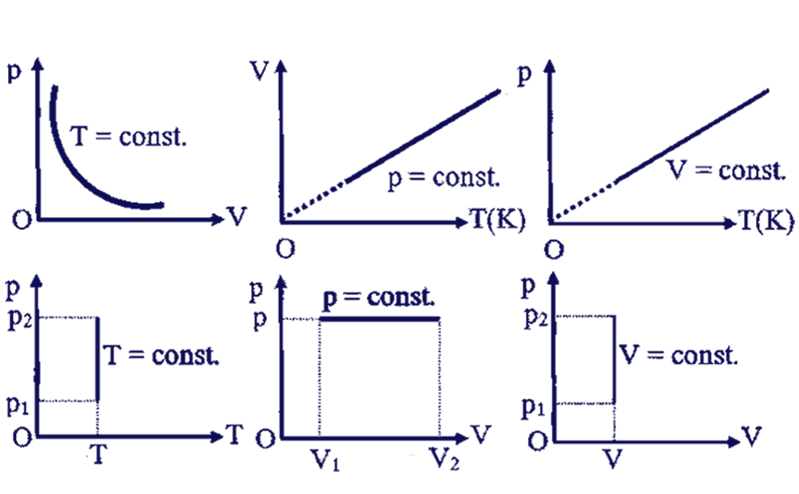

Agitația termică este mişcarea dezordonată şi continuă a particulelor unei substanţe (atomi sau molecule).
Difuzia este fenomenul de pătrundere a moleculelor unei substanțe printre moleculele altei substanțe, fără intervenţia unei forţe exterioare (de la sine).
Atomul este cea mai mică particulă dintr-o substanță care nu mai poate fi divizată prin procedee chimice obișnuite.
Molecula reprezintă cea mai mică particulă dintr-o substanță, care poate exista și în stare liberă și care păstrează proprietățile substanței din care provine.
Masa moleculară este o mărime adimensională (fără unitate de măsură) care ne arată de câte ori este mai mare masa reală a unei molecule decât unitatea atomică de masă (u.a.m.).
Masa atomică relativă (A) este numărul care arată de câte ori masa unui atom este mai mare decât unitatea atomică de masă.
Un mol de atomi reprezintă cantitatea, în grame, dintr-o substanţă simplă care conţine 6,022 ∙ 1023 de atomi. Se notează cu litera grecească ”niu”= υ.
υ = m(g) / A(g/mol) = masa de substanță simplă(g) / masa atomică(g/mol)
Numărul lui Avogadro, notat cu NA, este egal cu 6,022 ∙1023 mol-1 atomi şi reprezintă numărul de atomi conţinuţi într-un mol de atomi din orice substanță simplă.
Masa molară (notată cu litera grecească miu = μ) este masa unui mol de substanță. Are ca unitate de măsură g/mol.
Molul este unitatea de măsură în Sistemul Internațional a cantității de substanță care conține un număr de particule egal cu numărul lui Avogadro, NA.
υ = m(g) / μ(g/mol) = Masa substanței compuse(g) / Masa molară(g/mol)
υ = N / NA = Număr de particule / Numărul lui Avogadro
Un mol din orice gaz ocupă în condiții normale de temperatură (273 K) și presiune (105 Pa) un volum, numit volum molar = Vμ = 22,4 L/mol
v = V / Vμ = Volumul gazului(L) / Volumul molar(L/mol)
Relația între volumul molar și densitatea unei substanțe este:
P = μ / Vμ
Numărul volumic (n) reprezintă numărul de particule (atomi sau molecule) dintr-un m3 de substanță :
n = NA / Vμ = N / V
Echilibrul termodinamic și procese termodinamice:
Starea unui sistem termodinamic, la un anumit moment, este caracterizat de anumite mărimi fizice numite parametrii de stare.
Principiul echilibrului termodinamic:
Un sistem termodinamic izolat evoluează spontan spre o stare de echilibru termodinamic pe care nu o mai părăsește de la sine.
Starea de echilibru termodinamic a unui sistem poate fi modificată prin contact :
- mecanic cu mediul exterior
- termic cu un alt mediu (când două corpuri cu temperaturi diferite se ating) sau cu mediul exterior
- schimb de substanță cu mediul exterior sau alt mediu
Procesul termodinamic (transformarea de stare) reprezintă trecerea sistemului dintr-o stare în alta.
Transformarea cvasistatică are loc când stările intermediare prin care trece sistemul sunt stări de echilibru termic, atunci când parametrii de stare variază foarte lent.
Procesul reversibil este transformarea cvasistatică care poate avea loc în ambele sensuri, prin aceleași stări intermediare.
Ecuația de stare (numită Clapeyron - Mendeleev) descrie dependența dintre parametrii de stare ai unui sistem termodinamic:
p ∙ V = ν ∙ R ∙ T
p = presiunea gazului ideal
V = volumul gazului ideal
ν = numărul de moli ai gazului ideal
R = constanta universală a gazelor = 8,3143 ∙ 103 J/kmol ∙ K
T = temperatura gazului ideal

Temperatura empirică. Scări de temperatură:
Două sisteme termodinamice închise și izolate adiabatic de exterior care nu schimbă energie între ele au aceeași temperatură, numită temperatură empirică.
Temperatura este o mărime fizică de stare măsurată cu termometru, care implică un corp termometric, o mărime termometrică și o scară de temperatură.
Principiul zero al termodinamicii (tranzitivității echilibrului termic):
Dacă sistemul A este în echilibru termic cu sistemul B și sistemul B este în echilibru termic cu sistemul C, atunci și sistemul A este în echilibru termic cu sistemul C.
Relația de transformare între scara Celsius t(°C) și Fahrenheit tF(°F):
tF = 9/5 ∙ t(°C) + 32
Scara Kelvin (absolută):
[T]SI = K (kelvin)
T(K) = t (°C) + 273,15
Principiul I
Lucrul mecanic:
Schimbul de energie dintre un sistem termodinamic închis și mediul exterior poate avea loc în două moduri:
- Prin efectuare de lucru mecanic
- Prin transfer de căldură.
Măsura energiei transferate sistemului în condițiile interacțiunilor care au drept rezultat variația parametrilor de poziție sub acțiunea unor forțe se numește lucru mecanic.
L = F ∙ d
Lucrul mecanic efectuat de forța exterioară Fe este :
Le = pe ∙ S ∙ (x1 - x2) = - pe ∙ ΔV
S = aria secțiunii transversale a cilindrului
pe = presiunea exterioară
V2 = S ∙ x2
V1 = S ∙ x1
ΔV = V2 - V1
Lucrul mecanic efectuat de sistemul termodinamic într-o transformare izobară este:
L = p ∙ ΔV
Convenții de semne pentru lucrul mecanic efectuat de sistemul termodinamic:
a) Dacă gazul se destinde (îi crește volumul), ΔV > 0, atunci L > 0 și sistemul efectuează lucru mecanic asupra mediului exterior (cedează L).
b) Dacă gazul se comprimă (îi scade volumul), ΔV < 0, atunci L < 0 și asupra sistemului se efectuează lucru mecanic (primește L).
c) Dacă între sistem și exterior nu are loc transfer de energie prin lucru mecanic (L = 0), atunci gazul nu își modifică volumul (ΔV=0).
Lucrul mecanic:
Energia particulelor unui gaz real este dată:
- Energie externă este dată de suma energiei cinetică a sistemului ca întreg și energiei potențială a acestuia aflat într-un câmp de forțe.
- Energie internă (U) este dată de suma dintre energiile cinetice ale moleculelor (Ec) și energiile potențiale de interacțiune dintre moleculele sistemului termodinamic (Ep).
U = Ec + Ep
- Dar variația energiei interne (ΔU = U2 – U1) este o mărime fizică de stare și nu depinde de stările intermediare prin care trece sistemul, ci numai de starea inițială (U1) și cea finală (U2).
Căldura:
Căldura (Q) este o mărime fizică care măsoară energia transferată, numai prin mișcarea dezordonată a moleculelor dintre două corpuri aflate în contact termic.
[Q]SI = J(joule)
O altă unitate de măsură tolerată pentru căldură este caloria: 1cal = 4,18 J
Convenții de semne pentru căldură:
a) Când sistemul primește căldură din exterior, atunci Q > 0
b) Când sistemul cedează căldură în exterior, atunci Q < 0
c) Când sistemul este izolat adiabatic (nu schimbă căldură cu exteriorul), atunci Q = 0
Consecințe ale principiul întâi al termodinamicii:
Enunțul principiul întâi al termodinamicii:
Variația energiei interne a unui sistem într-un proces oarecare este:
ΔU = Q - L
Dacă sistemul este izolat (nu schimbă nici căldură și nici lucru mecanic cu exteriorul), atunci
Q = L = 0, ΔU = U2 – U1 = 0 și U1 = U2, adică energia internă a unui sistem izolat se conservă.
Ecuația principiul întâi al termodinamicii mai poate fi scrisă și sub forma definiției căldurii:
Q = ΔU + L, adică căldura primită de un sistem servește atât la variația energiei interne a sistemului, cât și la efectuarea de lucru mecanic de către sistem.
Dacă sistemul este izolat adiabatic (nu schimbă căldură cu exteriorul), atunci
Q = 0 și L = –ΔU = –(U2 – U1), adică un sistem izolat adiabatic schimbă lucru mecanic cu exteriorul numai pe seama variației energiei interne.
Dacă sistemul nu schimbă lucru mecanic cu exteriorul (L= 0), ci numai căldură atunci
ΔU = Q, adică căldura primită de sistem duce la creșterea energiei interne a sistemului.
Într-o transformare ciclică, ΔU = U2 – U1 = 0 și L = Q, adică sistemul poate efectua lucru mecanic numai dacă el primește căldură din exterior.
De aici rezultă și imposibilitatea existenței unui perpetuum mobile de speța întâi (dispozitiv care să producă lucru mecanic fără să consume energie din exterior).
Coeficienții calorici:
Căldura specifică (c) reprezintă mărimea fizică ce caracterizează căldura absorbită /cedată de 1kg de substanță pentru a-și mări /micșora temperatura cu un grad. Ea este o constantă de material și o găsim în tabelul cu constante de la sfârșitul acestui capitol.
c = 1 / m ∙ Q / ΔT
[c]S.I. = J/Kg∙K
Q = m ∙ c ∙ ΔT
m = masa corpului
c = căldura specifică
ΔT = Tfinală – Tinițială ,variația temperaturii corpului
Qprimită > 0
Qcedată < 0
Ecuația calorimetrică: Qprimită = | Qcedată |
Capacitatea calorică (C) reprezintă mărimea fizică ce caracterizează cantitatea de căldură necesară sistemului termodinamic pentru a-și varia temperatura cu un grad.
C = Q / ΔT
[C]S.I. = J/Kg
Q = C ∙ ΔT
Căldura molară (Cμ) este căldura necesară pentru a modifica temperatura unui mol dintr-o substanță cu un grad.
Cμ = Q / v ∙ ΔT
[Cμ] = J/mol∙K
Grade de libertate:
Cum în termodinamică moleculele gazului ideal sunt considerate puncte materiale, coordonatele independente ce caracterizează sistemul termodinamic se numesc grade de libertate.
- Pentru gazele monoatomice: i = 3
- Pentru gazele diatomice: i = 5
- Pentru gazele poliatomice: i = 6
Căldura molară la volum constant este:
Cv = i/2 R
Căldura molară la presiune constantă este:
Cp = (i + 2)/2 R
R = 8,3143 ∙ 103 J/kmol ∙ K (constanta universală a gazelor)
Transformare izocoră :
(ν și V const.) → ΔV = 0 → LV = p ∙ ΔV = 0
Avem două cazuri:
- Gazul închis într-un recipient de volum constant este încălzit, absoarbe căldură → QV > 0 și ΔU > 0 (crește energia internă a gazului).
- Gazul închis într-un recipient de volum constant este răcit, cedează căldură → QV < 0 și ΔU < 0 (scade energia internă a gazului)
Formule:
ΔU = QV = ν ∙ CV ∙ ΔT
ΔU = U – U0 și ΔT = T – T0, pentru T0 = 0 K → U0 = 0
Energia internă a unui gaz ideal monoatomic este:
U = ν ∙ CV∙ T = 3/2 ∙ ν ∙ R ∙ T
Transformare izobară:
(ν și p const.)
Dacă gazul este încălzit, absoarbe căldură → Qp > 0 și o parte din energie este folosită la creșterea energiei interne a gazului ΔU > 0 și cealaltă parte este lucrul mecanic efectuat de gaz asupra exteriorului, L > 0.
Formule:
L = p ∙ ΔV
Qp = ν ∙ Cp ∙ ΔT
Variația energiei interne nu depinde de proces și putem scrie:
ΔU = ν ∙ CV ∙ ΔT
Transformare izotermă:
(ν și T const.) → U = const. și ΔU = 0.
Când gazul este încălzit, absoarbe căldură → QT > 0 și L > 0, fiind folosită integral pentru efectuarea de lucru mecanic asupra exteriorului.
Într-o transformare izotermă, presiunea este invers proporțională cu volumul gazului și atunci avem lucrul mecanic.
Formule:
LT = v ∙ R ∙ T ∙ ln(V2 / V1)
QT = LT = v ∙ R ∙ T ∙ ln(V2 / V1)
p1 ∙ V1 = p2 ∙ V2
QT = LT = v ∙ R ∙ T ∙ ln(V2 / V1) = v ∙ R ∙ T ∙ ln(p1 / p2)
U = const și ΔU = 0
Transformare adiabatică:
(ν const.) → Qad = 0
Formule:
ΔU = - Lad
ΔU = ν ∙ Cv ∙ΔT
Lad = - ν ∙ Cv ∙ ΔT
Ecuația procesului adiabatic se numește ecuația Poisson:
p ∙ Vy = const.
y = coeficient adiabatic = Cp / CV
T ∙ Vy-1 - const
Ty / p y-1 = const
Relația lui Robert – Mayer:
În cazul transformării izocore:
ΔU = QV = v ∙ CV ∙ ΔT
CV = QV / (v ∙ ΔT) = ΔU / (v ∙ ΔT)
În cazul transformării izobare:
Qp = (v ∙ Cp ∙ ΔT) = ΔU + p ∙ ΔV
Cp = Qp / (v ∙ ΔT) = (ΔU + p ∙ ΔV) / (v ∙ ΔT)
Combinând cele două relații ale lui Cp și CV obținem:
Cp = CV + (p ∙ ΔV) / (v ∙ ΔT)
Din ecuația termică de stare:
p ∙ ΔV = ν ∙ R ∙ ΔT
Relația lui Robert–Mayer stabilește relația între căldurile molare:
Cp = CV + R
Relația lui Robert–Mayer stabilește relația între căldurile specifice molare:
cp = cV + (R / μ)
Motoare termice
Mașini termice:
În cursul unei transformări ciclice biterme, sistemul termodinamic schimbă căldurile Q1, respectiv Q2 cu două izvoare de căldură ale căror temperaturi sunt T1 (izvor cald) și T2 (izvor rece), cu T1 > T2 .
Cum transformările ciclice au ΔU = 0, conform principiului I al termodinamicii avem
Q1 + Q2 = L
Mașina termică este un sistem termodinamic care efectuează o transformare ciclică în care schimbă căldură și lucru mecanic cu mediul exterior.
Motoare termice:
Motorul termic este un sistem care transformă căldura primită, prin arderea unui combustibilul (benzina, motorina, gazul metan etc.) în lucru mecanic.
Motorul Otto:
Motorul Otto folosește drept combustibil un amestec de aer cu vapori de benzină ce se realizează în carburator.
- Amestecul carburant este aspirat prin supapa de admisie (S1) în cilindru cu piston.
- Gazele rezultate în urma arderii amestecului carburant sunt eleminate prin supapa de evacuare (S2).
- Timpul de funcționare este perioada de deplasare a pistonului de la punctul mort superior = PMS (cilindru închide un volum minim de substanță) la punctul mort inferior = PMI (cilindru închide un volum maxim de substanță) și invers.
- Pistonul este legat de un sistem bielă-manivelă (vilbrochen = arbore cotit), pentru transformarea mișcării rectilinie a pistonului în mișcare de rotație.
- Blocul motor este format din mai mulți cilindri legați în serie. Fiecare piston are alt timp de desfășurare pentru a permite învârtirea permanentă și constantă a vilborchenului.
Timpii de funcționare ai motorului Otto:
- Timpul 1: Admisia - (proces izobar):
Supapa de admisie se deschide, în cilindru se aspiră amestecul de benzină-aer și pistonul coboară de la PMS la PMI, la presiune constantă. Este prima coborâre a pistonului.
-Timpul 2: Compresia - (proces adiabatic):
Ambele supape sunt închise. Pistonul urcă până la PMS, astfel încât combustibilul este puternic comprimat, caz în care presiunea și temperatura cresc. Datorită vitezei mari la care are loc compresia, acest proces este adiabatic (fără schimb de căldură cu exteriorul). Este prima urcare a pistonului.
Ambele supape sunt închise și pistonul se află la PMS. Scânteia electrică produsă de bujie aprinde amestecul, care explodează și duce la o creștere considerabilă a presiunii la volum constant. Amestecul arde cu degajare de căldură (Q1 = căldura primită de motor). Gazele rezultate din ardere se destind adiabatic, împing pistonul în PMI cu efectuare de lucru mecanic.Este a doua coborâre a pistonului.
-Timpul 4 : Evacuarea - (proces izocor) și (proces izobar):
Supapa de evacuare S2 se deschide, caz în care presiunea scade brusc până la valoarea presiunii atmosferice.În acest proces izocor amestecul cedează căldura Q2 în mediul exterior. Pistonul urcă până la PMS împingând afară gazele arse la presiune constantă. De aici ciclul se reia.
Randamentul motorului termic Otto:
Randamentul motorului termic Otto (η) este o mărime fizică egală cu raportul dintre lucrul mecanic efectuat de motor (L) și căldura primită (Q).
η = L / Q1 = 1 - (|Qcedată| / Qprimită) = 1 - (|Q2| / Q1)
Presupunem că substanța de lucru este un gaz ideal și raportul de compresie este ε = V1/V2.
Motorul Diesel este un motor cu ardere internă, în patru timpi cu aprindere prin injecție a motorinei.
Timpii de funcționare ai motorului Diesel:
- Timpul 1: Admisia - (proces izobar):
Supapa de admisie se deschide, în cilindru se aspiră aer la presiunea atmosferică și pistonul coboară de la PMS la PMI, la presiune constantă (proces izobar). Este prima coborâre a pistonului.
- Timpul 2: Compresia - (proces adiabatic):
Ambele supape sunt închise. Pistonul urcă până la PMS, astfel încât aerul este puternic comprimat, caz în care presiunea și temperatura cresc considerabil. Datorită vitezei mari la care are loc compresia, acest proces este adiabatic (fără schimb de căldură cu exteriorul). Este prima urcare a pistonului.
- Timpul 3: Aprinderea - (proces izobar) și detenta - (proces adiabatic):
Ambele supape sunt închise și pistonul se află la PMS. Pompa de injecție pulverizează motorină în cilindrul motorului. Temperatura aerului din cilindru este mai mare decât temperatura de aprindere a motorinei, astfel încât aceasta se aprinde și arde la presiune constantă, cu degajare de căldură (Q1 = căldura primită de motor). Gazele rezultate din ardere se destind adiabatic, împing pistonul în PMI cu efectuare de lucru mecanic.Este a doua coborâre a pistonului.
- Timpul 4: Evacuarea - (proces izocor) și (proces izobar):
Supapa de evacuare S2 se deschide, caz în care presiunea scade brusc până la valoarea presiunii atmosferice. În acest proces izocor (la volum constant) amestecul cedează căldura Q2 în mediul exterior. Pistonul urcă până la PMS împingând afară gazele arse la presiune constantă. De aici ciclul se reia.
Randamentul motorului termic Diesel:
Randamentul motorului termic Diesel (η) este o mărime fizică egală cu raportul dintre lucrul mecanic efectuat de motor (L) și căldura primită (Q).
η = L / Q1 = 1 - (|Qcedată| / Qprimită) = 1 - (|Q2| / Q1)
Presupunem că substanța de lucru este un gaz ideal și raportul de compresie este ε = V1/V2 și α = V3/V2
Formularea Carnot a principiul al doilea al termodinamicii:
Prima formulare a principiul al doilea al termodinamicii îi aparține lui Sadi Carnot, care în 1824 arăta că există o limită superioară a eficienței conversiei căldurii în energie mecanică într-un motor termic, care implică folosirea unui ciclu termodinamic al unui fluid de lucru.
Carnot a fost primul care a arătat că nu este posibil să funcționeze o mașină termică cu un singur termostat, având nevoie de cel puțin două termostate. Astfel, sistemul primește căldură de la o sursă caldă (termostat cu T1) și cedează căldură unei surse reci (termostat cu T2).
Parametrii gazului în stare inițială sunt p1, V1 și T1.
Aducem cilindrul cu gaz pe un încălzitor (termostat cu T1). Gazul va absorbi căldură Q1 de la sursa caldă și se va destinde izoterm (T1 = const.) și cvasistatic de la V1 la V2, efectuând lucrul mecanic L1.
Aducem cilindrul cu gaz pe un suport termoizolator. Gazul se destinde adiabatic până la V3, efectuând lucrul mecanic L2. Gazul se răcește având temperatura T2 < T1.
Aducem cilindrul cu gaz pe o sursă rece (termostat cu T2). Gazul va ceda căldură Q2 și se va comprima izoterm (T2 = const.) și cvasistatic de la V3 la V4, primind lucrul mecanic L3.
Aducem cilindrul cu gaz pe un suport termoizolator. Gazul se comprimă adiabatic de la V4 până la 1. Temperatura lui va crește de la T2 la T1, primind lucrul mecanic L4. Gazul revine în starea inițială.
Randamentul ciclului Carnot:
Randamentul ciclului Carnot (η) este o mărime fizică egală cu raportul dintre lucrul mecanic efectuat de motor (L) și căldura primită (Q1).
η = L / Q1
L = L1 + L2 + L3 + L4
Formularea Carnot a principiul al doilea al termodinamicii:
Randamentul ciclului Carnot este întotdeauna subunitar, deoarece T2 ≠ 0
Randamentul ciclului Carnot depinde numai de temperatura sursei calde (T1) și a celei reci (T2) și nu depinde de substanța de lucru.
Randamentul unei mașini termice ireversibile este întotdeauna mai mic decît randamentul unei mașini termice care funcționează reversibil între aceleași limite de temperatură.